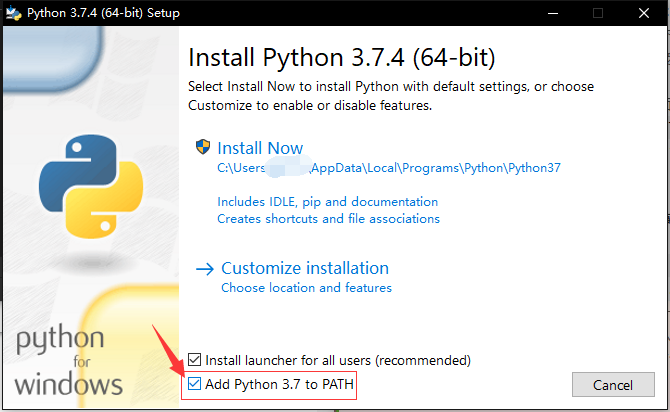
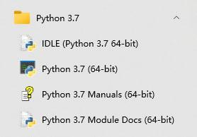

Python 速成
关于 Python
Python 是一门已在世界上广泛使用的解释型语言。它提供了高效的高级数据结构，还能简单有效地面向对象编程，也可以在算法竞赛。
Python 的优点
- Python 是一门 解释型 语言：Python 不需要编译和链接，可以在一定程度上减少操作步骤。
- Python 是一门 交互式 语言：Python 解释器实现了交互式操作，可以直接在终端输入并执行指令。
- Python 易学易用：Python 提供了大量的数据结构，也支持开发大型程序。
- Python 兼容性强：Python 同时支持 Windows、macOS 和 Unix 操作系统。
- Python 实用性强：从简单的输入输出到科学计算甚至于大型 WEB 应用，都可以写出适合的 Python 程序。
- Python 程序简洁、易读：Python 代码通常比实现同种功能的其他语言的代码短。
- Python 支持拓展：Python 会开发 C 语言程序（即 CPython），支持把 Python 解释器和用 C 语言开发的应用链接，用 Python 扩展和控制该应用。
学习 Python 的注意事项
- 目前主要使用的 Python 版本是 Python 3.7 及以上的版本，Python 2 和 Python 3.6 及以前的 Python 3 已经 不被支持，但仍被一些老旧系统与代码所使用。本文将 介绍较新版本的 Python。如果遇到 Python 2 代码，可以尝试
2to3程序将 Python 2 代码转换为 Python 3 代码。 - Python 的设计理念和语法结构 与一些其他语言的差异较大 ，隐藏了许多底层细节，所以呈现出实用而优雅的风格。
- Python 是高度动态的解释型语言，因此其 程序运行速度相对较慢，尤其在使用其内置的
for循环语句时。在使用 Python 时，应尽量使用filter、map等内置函数，或使用 列表生成 语法的手段来提高程序性能。
环境搭建
Windows
访问 https://www.python.org/downloads/ 下载自己需要的版本并安装。
为了方便，请务必勾选复选框 Add Python 3.x to PATH 以将 Python 加入环境变量。
如下图，在 Python 3.7.4 版本的安装界面中，应勾选最后一项复选框。

安装完成后，可以在开始菜单找到安装好的 Python。

此外，可以在命令提示符中运行 Python。
正常启动 Python 解释器后，它会先显示欢迎信息等内容，之后就会出现提示符 >>>，大致如下所示：
1 2 3 | |
此外，也可以在 Microsoft Store 中免费而快捷地获取 Python。
macOS/Linux
通常情况下，大部分的 Linux 发行版中已经自带了 Python。如果只打算学习 Python 语法，并无其它开发需求，不必另外安装 Python。
注意
在一些默认安装（指使用软件包管理器安装）Python 的系统（如 Unix 系统）中，应在终端中运行 python3 打开 Python 3 解释器。1
如果发行版自带 Python 版本过旧，可自行下载编译最新版本的 Python。此外，也可以通过 venv、conda、Nix 等工具管理 Python 工具链和 Python 软件包，创建隔离的虚拟环境，避免出现依赖问题。
更多详情您可以直接在搜索引擎上使用关键字 系统名称(标志版本) 安装 Python 2/3 来找到对应教程。
通过镜像下载安装文件
目前国内关于 源码 的镜像缓存主要是 北京交通大学自由与开源软件镜像站 和 华为开源镜像站，可以到那里尝试下载 Python 安装文件。
使用 pip 安装第三方库
pip 是首选的安装第三方库的程序。自 Python 3.4 版本起，它被默认包含在 Python 二进制安装程序中。
pip 中的第三方库主要存储在 Python 包索引（PyPI） 上，用户也可以指定其它第三方库的托管平台。使用方法可参照 pypi 镜像使用帮助 - 清华大学开源软件镜像站、PyPI 镜像源使用帮助 — 中国科学技术大学镜像站 等使用帮助。你可以在 MirrorZ 上获取更多 PyPI 镜像源。
基本语法
Python 的语法简洁而易懂，也有许多官方和第三方文档与教程。你可以在 Python 文档 和 Python Wiki 等网页上了解更多关于 Python 的教程。
注释
加入注释并不会对代码的运行产生影响，但加入注释可以使代码更加易懂易用。
1 2 3 4 5 6 7 | |
基本数据类型
在 Python 中，你无需事先通过关键字声明变量类型和变量名，可以通过直接赋值的方式创建各种类型的变量。
整数类型和浮点数类型
Python 中的整数（比如 5、8、16）为 int 类型，浮点数（如 2.33、6.0）为 float 类型。
Python 的运算表达式与其他大部分语言（如 C++）相似，使用运算符 +、-、*、/、% 来对数字进行运算，使用 () 来进行符合结合律的分组。
1 2 3 4 5 6 7 8 9 10 11 12 13 14 15 16 17 18 19 | |
如果想要得到除法运算后的整数结果（或对浮点数结果向下取整的结果），可以使用整数除法（//）。
Python 中，还可以使用 ** 运算符和内置的 pow(base, exp, mod=None) 函数进行幂运算，使用 abs(x) 求数的绝对值。
1 2 3 4 5 6 7 8 | |
布尔值类型
Python 中的布尔值有且仅有 True 和 False 两个值。
布尔值也可以作为一个判断表达式初始化，如表达式 1 > 2 的值为 False。
单个布尔值可以进行逻辑非运算（not），布尔值之间可以进行逻辑与运算（and）和逻辑或运算（or）。
注意
not的优先级比（非布尔运算符的）运算低，因此not a == b会被解读为not (a == b)，而a == not b会引发语法错误。and和or是短路运算符，其会先判断第一个参数的值，但这对代码编写的影响并不大。
字符串类型
Python 中的字符串用单引号或双引号包裹，也可以使用三引号（三个单引号或三个双引号）包裹。使用三引号包裹的字符串是跨行字符串。
1 2 3 4 5 6 7 8 9 10 11 12 13 14 15 16 | |
字符串间可使用 + 运算符相连，表示将两字符串相连，如 'abc' + 'def' 得到的结果为 'abcdef'。字符串与数间可使用 * 运算符相连，表示将字符串重复，如 'a' * 3 和 3 * 'a' 的值均为 'aaa'。
可以通过关键字 in 判断一字符串是否为另一字符串的子串，如 'a' in 'abc' 的值为 True。
可以通过 len(obj) 函数获得字符串的长度，如 len('abc') 的值为 \(3\)。
Python 中的字符串与列表（list）相似，支持通过索引（自 \(0\) 开始）获取字符串中的某一个字符（严谨来说，返回的是长度为 \(1\) 的字符串）。对于逆序取字符串的情况，可以使用负数索引表示。例如对于字符串 s = 'abc'，s[0] 与 s[2] 的值分别为 'a' 和 'c'，s[-1] 的值为 'c'。
注意
索引越界时，Python 解释器将会报错。
Python 的字符串是不可变对象，不支持直接通过索引修改字符串的某一个字符。如果需要生成不同的字符串，应新建一个字符串。
Python 也支持对字符串进行切片获取字符串的子串。切片的格式是在原本填写序列的中括号组（即 []）间填写一个左闭右开区间。例如，对于字符串 s = 'OI Wiki'，s[0:2] 和 s[3:7] 的值分别为 'OI' 和 'Wiki'。当区间左端点为字符串的开头时，可省略开始索引切片；当区间右端点为字符串的末尾时，可省略末尾索引切片。如 s[:2] 与 s[0:2] 含义相同。当区间右端点越界时，将取到字符串的末尾。如 s[3:20] 的值仍为 'Wiki'。也可以为切片指定步长（默认值为 \(1\)），如 s[0:7:2] 的值为 'O wk'。特别地，当步长为 \(-1\) 时，将得到反转的字符串。
格式字符串字面值（即 f-string）通常用于格式化字符串，它是标注了 f 或 F 前缀的字符串字面值。这种字符串可包含替换字段（即以 {} 标注的表达式）。其他字符串字面值只是常量，格式字符串字面值则是可在运行时求值的表达式。
1 2 3 4 | |
Python 的字符串类型包含 Unicode 字符，这意味着任何字符串都会存储为 Unicode。2 在 Python 中，可以对一个 Unicode 字符使用内置函数 ord() 将其转换为对应的 Unicode 编码，逆向的转换使用内置函数 chr()。
如果想把数转换为对应的字符串，可使用 Python 内置函数 str()，也可以使用 f-string 实现；反之，可以使用 int() 和 float() 两个函数。
Python 的字符串类型还有 许多方便的功能。由于本文篇幅有限，这里不一一介绍。
数据类型判断
对于一个变量，可以使用 type(object) 返回变量的类型，例如 type(8) 和 type('a') 的值分别为 <class 'int'> 和 <class 'str'>。
输出和输入
输出
print() 函数会输出给定参数的值。与表达式不同，它能处理多个任意的参数。它输出的字符串不带引号。
在需要输出的内容后可以添加两个参数 sep 与 end（分别表示各参数间的分隔符和输出后的分隔符）。默认情况下，两个参数的值分别为 ' ' 和 '\n'。
例如，运行 print('OI','Wiki',sep = ' ',end = '!\n') 将会输出 OI Wiki! 并换行。
输入
input() 函数从输入中读取一行，将其转换为字符串（除了末尾的换行符）并返回。如果函数有参数，则将会先输出参数，再读取输入内容。
在一行内输入多个数值时，可以使用字符串的 split() 方法。这一方法将返回一个按给定分隔符（默认值为 ' '）分隔后得到的字符串组成的列表（列表和字符串相似，可以通过序列访问某一元素，将在下文详细提及）。例如，如果需要输入两个整数，并输出它们的和，你可以编写以下程序。
1 2 3 | |
range 对象
range 类型表示不可变的数字序列，通常用于在 for 循环中循环指定的次数。
range() 函数接受 \(1\) 至 \(3\) 个整数参数，返回一个 range 对象。
当其恰有 \(2\) 个参数时，将会返回大于等于第一个参数且小于第二个参数的所有整数组成的 range 对象；当仅有 \(1\) 个参数时，函数 range(stop) 等效于 range(0,stop)，将返回小于参数的所有非负整数组成的 range 对象；当有 \(3\) 个参数时，函数将把第三个参数作为步长（即 range 对象中的数组成的等差数列的公差）。例如，range(1, 5) 函数与 range(1, 7, 2) 函数所得的 range 对象分别由 \(1,2,3,4\) 与 \(1,3,5\) 组成。
如果步长可以是负值，确定 range 对象的内容的公式仍然为 \(r_{i}=\textit{start}+i\times \textit{stop}\)，但限制条件为 \(0\leq i\) 且 \(r_{i}>\textit{stop}\)。
注意
步长的值不能为 \(0\)。
range 对象间可以使用 == 和 != 进行比较，但是比较的内容将为 range 对象的序列，而不是生成其的函数的参数的值。
列表
list 类型
Python 支持多种复合数据类型，可将不同值组合在一起。最常用的 list ，类型是用方括号标注、逗号分隔的一组值。例如，[1, 2, 3] 和 ['a','b','c'] 都是列表。
列表可以是空列表（即 []），也可以包含不同类型的元素。列表支持索引和切片访问某一或某些元素。
对于一个 range 对象，可以使用 list() 函数将其转换为对应的列表。如 list(range(1, 5)) 的返回值为 [1, 2, 3, 4]。
append() 方法可以在列表末添加元素。insert() 方法接受两个参数，可以在列表中某一给定位置插入一个元素。pop() 方法可以返回并弹出指定索引的元素（默认为末尾元素）。
和字符串相似：列表间使用 + 运算符相连表示相连两列表，如 '[1, 2]' + [3] 得到的结果为 [1, 2, 3]；数组与数相乘表示重复数组，如 [1, 2] * 3 和 3 * [1, 2] 的值均为 [1, 2, 1, 2, 1, 2]；列表支持通过 len() 函数获取列表的长度。
注意
在部分 Python 版本中，列表的数乘是拷贝引用。在进行乘法时最好使用切片，以防修改一个元素而导致多个元素的值同时改变。
列表可以嵌套使用。如 list_s = [[1, 3], [2, 4]] 是一个合法的列表。此时，list_s[0] 的值为列表 [1, 3]，list_s[1][0] 的值为 \(2\)。
Python 中支持列表解析，如 [abs(x) - 2 for i in range(-1, 4)] 的值为 [-1, -2, -1, 0, 1]。
count() 方法可以统计列表中某一值的出现次数。sort() 方法可以对列表中的元素进行排序。sorted() 函数可以返回排序后的列表（这一函数不改变原列表的顺序）。
使用 NumPy
NumPy 是著名的 Python 第三方科学计算库，提供高性能的数值及矩阵运算。在测试算法原型时可以利用 NumPy 避免手写排序、求最值等算法。NumPy 中的数据结构之一 ndarray（即多维数组）可以在内存中连续存储元素，且是定长的数组。一些 OJ 中都支持使用 NumPy 库。
下面的代码将介绍如何利用 NumPy 建立多维数组并进行访问。
1 2 3 4 5 6 7 8 9 10 11 12 13 14 15 16 17 18 19 20 21 22 23 24 25 26 27 28 29 30 31 32 33 34 35 36 37 38 39 40 41 42 43 44 45 46 | |
类型检查和提示
无论是参加算法竞赛还是开发项目，使用类型提示可以让你更容易地推断代码、发现细微的错误并维护干净的体系结构。Python 的支持版本都允许你指定明确的类型进行提示，有些工具可以使用这些提示来帮助你更有效地开发代码。Python 的类型检查主要是用类型标注和类型注释进行类型提示和检查。
对于 OIer 来说，掌握 Python 类型检查系统的基本操作就足够了；项目实操中，如果你需要写出风格更好的、易于类型检查的代码，可以参考 Mypy 的文档。
动态类型检查
Python 是一个动态类型检查的语言，以灵活但隐式的方式处理类型。Python 解释器仅仅在运行时检查类型是否正确，并且允许在运行时改变变量类型。
1 2 3 4 5 6 7 8 9 | |
类型提示简例
我们首先通过一个例子来简要说明。假如我们要向函数中添加关于类型的信息，首先需要按如下方式对它的参数和返回值设置类型标注：
1 2 3 4 5 6 7 8 9 10 | |
但是这样添加类型提示没有运行时的效果——如果我们用错误类型的 align 参数，程序依然可以在不报错、不警告的情况下正常运行。
1 2 3 4 | |
因此，我们需要使用静态检查工具来排除这类错误，其中最常用的检查工具是 Mypy。
1 2 3 4 5 | |
如果没有报错，说明类型检查通过；否则，会提示出问题的地方。
注意
类型检查可向下（子类型）兼容，如 int 类型可以在 Mypy 中通过浮点数类型标注的检查（int 是 float 的子类型）。
类型标注
类型标注是自 Python 3 引入的特征，是添加类型提示的重要方法。例如这段代码就引入了类型标注，你可以通过调用 circumference.__annotations__ 来查看函数中所有的类型标注。
1 2 3 4 | |
当然，除了函数函数，变量也是可以类型标注的，你可以通过调用 __annotations__ 来查看函数中所有的类型标注。
1 2 3 4 | |
变量类型标注赋予了 Python 静态语言的性质，即声明与赋值分离：
1 2 3 4 5 6 | |
类型注释
类型注释是一种特殊格式的代码注释，其作为你代码的类型提示。
1 2 3 4 5 6 7 8 9 10 11 12 13 14 15 16 17 18 19 20 | |
这种注释不包含在类型标注中，你无法通过 __annotations__ 找到它，同类型标注一样，你仍然可以通过 Mypy 运行得到类型检查结果。
装饰器
装饰器是一个函数，接受一个函数或方法作为其唯一的参数，并返回一个新函数或方法，其中整合了修饰后的函数或方法，并附带了一些额外的功能。简而言之，可以在不修改函数代码的情况下，增加函数的功能。相关知识可以参考 官方文档。
部分装饰器在竞赛中非常实用，比如 lru_cache，可以为函数自动增加记忆化的能力，在递归算法中非常实用：
@lru_cache(maxsize=128,typed=False)
- 传入的参数有 2 个：
maxsize和typed，如果不传则maxsize的默认值为 128，typed的默认值为False。 - 其中
maxsize参数表示的是 LRU 缓存的容量，即被装饰的方法的最大可缓存结果的数量。如果该参数值为 128，则表示被装饰方法最多可缓存 128 个返回结果；如果maxsize传入为None则表示可以缓存无限个结果。 - 如果
typed设置为True，不同类型的函数参数将被分别缓存，例如，f(3)和f(3.0)会缓存两次。
以下是使用 lru_cache 优化计算斐波那契数列的例子：
1 2 3 4 5 | |
常用内置库
在这里介绍一些写算法可能用得到的内置库，具体用法可以自行搜索或者阅读 官方文档。
| 库名 | 用途 |
|---|---|
array |
定长数组 |
argparse |
命令行参数处理 |
bisect |
二分查找 |
collections |
有序字典、双端队列等数据结构 |
fractions |
有理数 |
heapq |
基于堆的优先级队列 |
io |
文件流、内存流 |
itertools |
迭代器 |
math |
数学函数 |
os.path |
系统路径等 |
random |
随机数 |
re |
正则表达式 |
struct |
转换结构体和二进制数据 |
sys |
系统信息 |
从例题对比 C++ 与 Python
例题 洛谷 P4779 【模板】单源最短路径（标准版）
给定一个 \(n(1 \leq n \leq 10^5)\) 个点、\(m(1 \leq m \leq 2\times 10^5)\) 条有向边的带非负权图，请你计算从 \(s\) 出发，到每个点的距离。数据保证能从 \(s\) 出发到任意点。
声明常量
1 2 3 4 | |
1 2 3 4 5 6 7 8 9 | |
声明前向星结构体和其它变量
1 2 3 4 5 6 7 8 9 10 11 12 13 | |
1 2 3 4 5 6 7 8 9 10 11 12 13 14 15 16 17 18 19 20 21 22 23 24 | |
Dijkstra 算法
1 2 3 4 5 6 7 8 9 10 11 12 13 14 15 16 | |
1 2 3 4 5 6 7 8 9 10 11 12 13 14 15 16 17 18 19 20 21 22 | |
主函数
1 2 3 4 5 6 7 8 9 10 11 12 13 14 | |
1 2 3 4 5 6 7 8 9 10 11 12 13 14 | |
完整的代码如下：
C++
1 2 3 4 5 6 7 8 9 10 11 12 13 14 15 16 17 18 19 20 21 22 23 24 25 26 27 28 29 30 31 32 33 34 35 36 37 38 39 40 41 42 43 44 45 46 | |
Python
1 2 3 4 5 6 7 8 9 10 11 12 13 14 15 16 17 18 19 20 21 22 23 24 25 26 27 28 29 30 31 32 33 34 35 36 37 38 39 40 41 42 43 44 45 46 47 48 49 50 51 52 53 54 55 56 57 58 59 60 61 62 63 64 65 66 67 68 | |
参考文档
- Python Documentation,https://www.python.org/doc/
- Python 官方中文教程，https://docs.python.org/zh-cn/3/tutorial/
- Learn Python3 In Y Minutes,https://learnxinyminutes.com/docs/python3/
- Real Python Tutorials,https://realpython.com/
- 廖雪峰的 Python 教程，https://www.liaoxuefeng.com/wiki/1016959663602400/
- GeeksforGeeks: Python Tutorials,https://www.geeksforgeeks.org/python-programming-language/